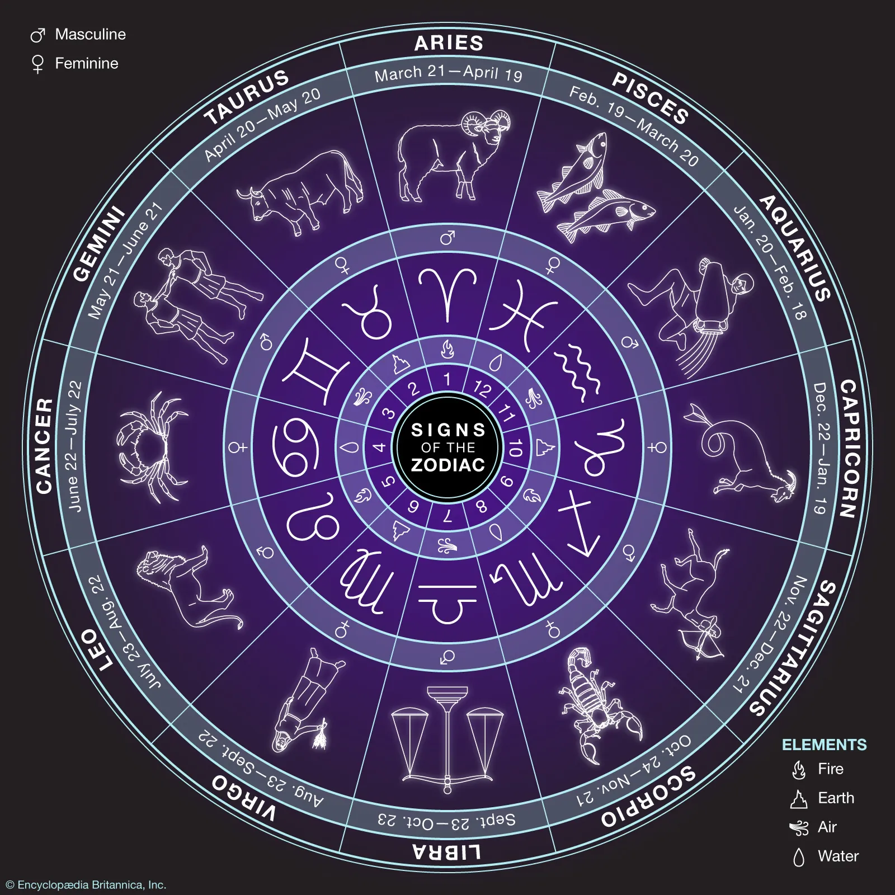

zodiac, in astronomy and astrology, a belt around the heavens extending 9° on either side of the ecliptic, the plane of Earth's orbit and of the Sun's apparent annual path. The orbits of the Moon and of the principal planets also lie entirely within the zodiac. The 12 astrological signs of the zodiac are each considered to occupy 1/12 (or 30°) of its great circle. These signs no longer correspond to the astronomical constellations in which the Sun actually appears. The constellations are irregular in size and shape, and the Sun regularly passes through one constellation (Ophiuchus) that is not considered a member of the zodiac. Because most of the constellations through which the ecliptic passes represent animals, the ancient Greeks called its zone zōdiakos kyklos, “circle of animals,” or ta zōdia, “the little animals.” The size and number of zodiacal constellations varied in antiquity and became fixed only with the development of mathematical astronomy. The list below gives the constellations of the zodiac, with the dates of the Sun's passage through them in the era when their boundaries were fixed. These dates are still used for the astrological signs, though precession of the equinoxes has shifted the constellations eastward; e.g., on January 1 the direction of the sun is now in Sagittarius instead of Capricornus. The history of the symbols is unknown; they seem to appear first in Greek manuscripts of the late Middle Ages.
For feedback visit this page